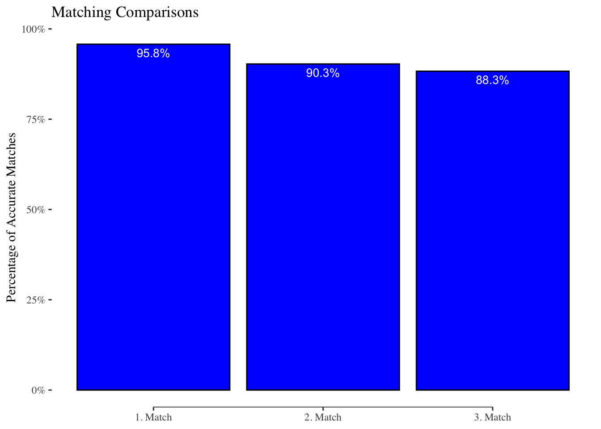

| id | name | iso3 | city | address | size |
|---|---|---|---|---|---|
| 291C5CB8 | ASM INTERNATIONAL NV | NLD | ALMERE | VERSTERKERSTRAAT 8 | large |
| 097A6454 | TELEFONAKTIEBOLAGET LM ERICS | SWE | STOCKHOLM | TORSHAMNSGATAN 21, KISTA | small |
| 0CA8A1F4 | NOVO NORDISK A/S | DNK | BAGSVAERD | NOVO ALLE 1 | small |
Name Matching Package
rMatching
Installation
You can install the development version of rMatching from GitHub with:
devtools::install_github("TerminologyStandardization/rMatching")
Build-In Tables
Below The basic steps how to match two data sets by company names.
The package contains three build-in datasets:
table_source: The source table with company namestable_target: The target table with company namestable_matches: A table in which source and target table are already matched
table_source
table_target
| id | name | iso3 | city | address | size |
|---|---|---|---|---|---|
| 40D62BF9 | VOLKSWAGEN AG | DEU | WOLFSBURG | BRIEFFACH 1849 | middle |
| 18162F6F | DAIMLER AG | DEU | STUTTGART | MERCEDESSTRASSE 120 | small |
| 47F0DB5C | BAYERISCHE MOTOREN WERKE AG | DEU | MUENCHEN | PETUELRING 130 | middle |
table_matches
| id_s | id_t | name_s | name_t | iso3_s | iso3_t | city_s | city_t | address_s | address_t | match |
|---|---|---|---|---|---|---|---|---|---|---|
| 291C5CB8 | 1147DBEB | ASM INTERNATIONAL NV | ASM INTERNATIONAL NV | NLD | NLD | ALMERE | ALMERE | VERSTERKERSTRAAT 8 | VERSTERKERSTRAAT 8 | 1 |
| 0CA8A1F4 | BACB9C1F | NOVO NORDISK A/S | NOVO NORDISK A/S | DNK | DNK | BAGSVAERD | BAGSVAERD | NOVO ALLE 1 | NOVO ALLE | 1 |
| 80DC386E | C201D476 | KONINKLIJKE PHILIPS NV | KONINKLIJKE PHILIPS N.V. | NLD | NLD | AMSTERDAM | AMSTERDAM | PHILIPS CENTER, AMSTELPLEIN 2 | AMSTELPLEIN 2 | 1 |
Name Matching Pipeline
Step 1: Prepare Tables
Tables have to be prepared with the function: prep_tables()
Inputs:
.source: The Source Table - This is the table containing the names you want to match. These names will be compared to those in the target table to identify potential matches..target: The Target Table - This table contains the names to which the source table names will be matched. The function aims to find corresponding names in the target table for each name in the source table..fstd: Standardization Function - This is a user-defined or built-in function used to standardize the names in both source and target tables. By default, the function uses the built-instandardize_strfunction for this purpose..dir: Data Storage Directory - This parameter specifies the directory where the processed data will be stored, allowing for easy access and review of the intermediate data files..return: Return Tables as List - This is a boolean flag that determines whether the processed source and target tables should be returned as a list. If set toTRUE, the function will return the tables; otherwise, it will only store them in the specified directory..verbose: Verbose Output - This boolean flag controls the display of additional information during the function’s execution. If set toTRUE, the function will print extra details, which can be useful for troubleshooting and understanding the matching process.
The relevant tables are stored in the directory (.dir)
| type | file |
|---|---|
| Source Table | sdata.fst |
| Source Table | sorig.fst |
| Groups | tdata.fst |
| Groups | torig.fst |
Step 2: Match Data
The Matching can be now performed with the function match_data()
Inputs:
.dirData Storage Directory - This parameter specifies the directory in which the processed data will be stored. It enables easy access and review of the intermediate data files created during the matching process..colsNamed Vector for Columns - This parameter is a named vector containing the columns to be considered for matching. The names in the vector should be either “e” or “exact” for an exact comparison of the strings, or “f” or “fuzzy” for a fuzzy matching approach as specified by the .method argument. Names in the vector can be either quoted or unquoted, while the values must be quoted..rangeCharacter Range - This parameter defines the range of characters to be considered when matching names. For example, if a name in the source table has 10 characters and .range is set to 5, any name within the 5-15 character range in the target table will be considered for matching..weightsColumn Weights - This named vector assigns weights to each column used for matching. If not specified, all columns will be assigned equal weights by default..max_matchMaximum Matches - This parameter determines the maximum number of matches to be returned for each record in the source table..allow_multMultiple Match Permission - This boolean parameter indicates whether multiple matches are allowed for each record in the target table. If you want a 1-1 match, set it to FALSE; for a 1-n match, set it to TRUE..methodMatching Method - This parameter specifies the method to be used for matching records. It can be one of the following: “osa”, “lv”, “dl”, “hamming”, “lcs”, “qgram”, “cosine”, “jaccard”, “jw”, or “soundex”. For more information on these methods, refer to the stringdist-metrics documentation in the {stringdist} package..workersParallel Workers - This parameter defines the number of workers to be used for parallelization during the matching process..mat_sizeMaximum Matrix Size - This parameter sets the maximum size of the similarity matrix created during the fuzzy matching process. If you are dealing with a large number of names to match, the matrix can become very large. Adjust this value to avoid overloading your system’s memory..verboseVerbose Output - This boolean flag determines whether additional information is displayed during the execution of the function. If set to TRUE, the function will output extra details, which can be helpful for troubleshooting and gaining insights into the matching process.
The output looks the following:
| id_s | id_t | score | rank_old | rank_new | name_s | name_t | iso3_s | iso3_t | city_s | city_t | address_s | address_t | size_s | size_t |
|---|---|---|---|---|---|---|---|---|---|---|---|---|---|---|
| 000F8750 | E48EB751 | 1.0000000 | 1 | 1 | NTR HOLDING A/S | NTR HOLDING A/S | DNK | DNK | COPENHAGEN | COPENHAGEN | BREDGADE 30 | SANKT ANNAE PLADS 13 3 | middle | middle |
| 000F8750 | 1749518D | 0.6686869 | 2 | 2 | NTR HOLDING A/S | NEWCAP HOLDING A/S | DNK | DNK | COPENHAGEN | KOBENHAVN K | BREDGADE 30 | BREDGADE 30 | middle | middle |
| 000F8750 | 6A2ED2E8 | 0.5789474 | 4 | 3 | NTR HOLDING A/S | LOYAL SOLUTIONS A/S | DNK | DNK | COPENHAGEN | COPENHAGEN | BREDGADE 30 | ROBERT JACOBSENS VEJ 68 | middle | middle |
| 002FCAB5 | FF136D09 | 1.0000000 | 1 | 1 | VIROGATES A/S | VIROGATES A/S | DNK | DNK | BIRKEROD | BIRKEROD | BANEVAENGET 13 | BLOKKEN 45 | large | large |
| 002FCAB5 | 45C4AE7D | 0.3942308 | 3 | 2 | VIROGATES A/S | PHOTOCAT A/S | DNK | DNK | BIRKEROD | ROSKILDE | BANEVAENGET 13 | LANGEBJERG 4 | large | large |
| 0051857E | 9E944051 | 0.7600000 | 1 | 1 | GAUMONT SA | GAUMONT | FRA | FRA | NEUILLY-SUR-SEINE | NEUILLY-SUR-SEINE | 30, AVENUE CHARLES DE GAULLE | 30, AVENUE CHARLES DE GAULLE | middle | middle |
The output contains the following relevant columns: id_s: The ID of the source table id_t: The ID of the target table score: similarity score rank_old: Unadjusted Rank rank_new: Adjusted Rank (only relevant if .allow_mult = FALSE, than the rank will consider the best match of a name considering all the other matches)
Note _t stands for the column in the target table and _s for the columns in the source table
The matching is now already stored, so if you just want to change for example the weights, the calculation will be almost instant.
But if you want to change the columns, the function has to cache another matching
Deduplicating Matches
The Outputs of the matching tables is still not unique. We can easily deduplicate them by setting rank_new ==
we can quickly check that we have unique 1-1 matches with the function filter_dups() which return s a dataframe with all duplicates
[1] 0[1] 0[1] 0Matching Comparison
Let us now see how good the matching library performs. We calculated 3 different matches which we stored in match1, match2, and match3.
First we load the pre-stored matches and combine all the matches to a single table
